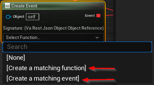

- Generated by
 1.9.5
1.9.5
|
YOM Replicator SDK 0.7.0.4
A metaverse SDK created by YOM
|
The YourOpenMetaverse plugin allows you to create and call your own external events. These events can be anything that you want it to be like fireworks, opening portals, airdropping items, etc... The events can be called from the Bridge or from your website. In this guide we will show how to create your own events and how the events can be called.
To create your own events you will need to create an Actor and add a Yom External Event or a Yom Stream Event component to the actor. Firstly you will need to give the event an Event Name by going to Details -> Yom External Event / Yom Stream Event -> Event Name and setting your own Event Name. This Event Name will be the name of your function, so E.G. calling your function Hello World and calling the function Hello World from the Bridge will call this event. After you have set a name you will have to register the event in the Event BeginPlay of the actor by calling Register Event on the event component, this will set it up so that the event can be called. Please note that Yom Stream Events need to be registered per client, as the event will come from the client's stream, while Yom External Event needs to only be registered on the server. Not calling Register Event will not list the event and the event can thus not be called. You can also call UnRegister on the event to ensure that the event cannot be called again. A normal setup for an event looks like this:
You can create your custom event graph in the Create Event node by clicking the dropdown and clicking either Create a matching function or Create a matching event. In these nodes you will get a json parameter that contains the variables given by the event command. You will need to retrieve the variables yourself from the json with vaRest.

Currently not possible as the Bridge needs to be updated to do this.
It is also possible to trigger events directly from the host website. To trigger an event, call emitUIInteraction on the iframe. This method takes json object that takes a function parameter and a data field. The function should be the same as your event name, the data field should contain all parameters that your function needs. Example code (javascript):